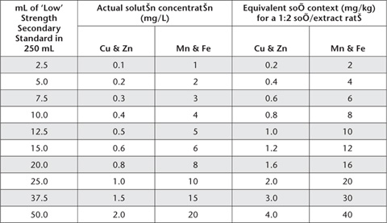
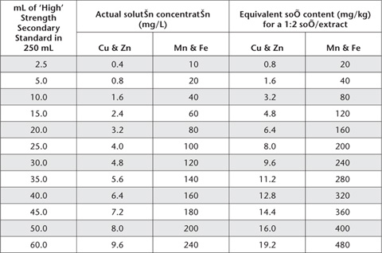
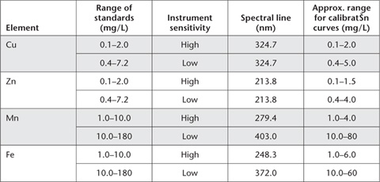
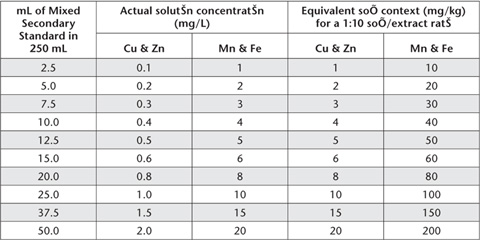

There is increasing use of micronutrient and heavy metal tests for soil fertility and resource-condition assessments. Major objectives of soil fertility tests are to separate deficient from non-deficient soils, and to indicate when a profitable response to applications of specific micronutrients might be expected. Soil tests are also used to indicate possible nutrient and heavy metal toxicities. For example, toxicities of Cu and Zn can develop from the repeated use of crop-protection fungicides based on these elements (Rayment and Brooks 1974). For recent reviews with an Australian emphasis, including examples of interpretative criteria, see Armour and Brennan (1999) for Zn, Bell (1999) for B, Brennan and Best (1999) for Cu, Brennan and Bruce (1999) for Mo, McFarlane (1999) for Fe, and Uren (1999) for Mn. Examples from Brazil have been reported by de Abreu et al. (2005).
Because micronutrients and heavy metals exist in soils in water-soluble, exchangeable, adsorbed, chelated, and complexed forms, as well as in secondary clay minerals, insoluble metal oxides and in primary minerals (Cox and Kamprath 1972; Ure and Berrow 1982), a wide range of laboratory methods are used for their determination in soils. The methods included are the DTPA test for Fe, Cu, Mn and Zn (Lindsay and Norvell 1969a, 1978); an ammonium bicarbonate-ethylenediamine tetra acetic acid (NH4HCO3/EDTA) test for Cu and Zn (Best et al. 1985); a 0.1 M HCl extraction for Cu and Zn in canelands (e.g. Reghenzani 1990); hot, aqueous CaCl2 for B (Aitken et al. 1987); and a CaCl2 extractant for extractable Mo. More details on these micronutrient soil tests (see Table 12.1 for summary details) plus comparative inter-laboratory analytical performance data (where available), are given in preambles to individual methods and in Appendix 2. Methods 12A to 12C, inclusive, were similarly coded in Rayment and Higginson (1992).
All the tests are empirically based: they are dependent on strict adherence to method specifications. It is also important at all times to avoid all sources of possible contamination. Measurement is mostly by ICPAES. Atomic absorption is an alternative for the heavy metals, a manual colorimetric option is available for soil B, and ICP-MS is preferred for Mo analysis at low concentrations.
Extracting solutions containing chelating agents such as diethylenetriamine penta acetic acid (DTPA) removes micronutrient cations adsorbed on solid phases together with water-soluble constituents. As such, the test may simulate the action of plant roots. Consequently, extraction with DTPA has been used to assess the micronutrient fertility of soils (Lindsay and Norvell 1969a, 1978). The test was inferior to dilute CaCl2 for predicting the availability of soil Cd to a wide range of vegetables (Rayment 1994), while Menzies et al. (2007) report that neutral salt extractants appear to provide the most useful prediction of trace metal phytoavailability.
Table 12.1. Summary detaÕs of method codes, technologies, method titles, and notes on micronutrient methods.
Code |
Technology |
Test method |
Notes |
12A1 |
Empirical extraction – with an ICPAES or AAS finish. |
DTPA-extractable Cu, Zn, Mn and Fe. |
A popular commercial soil test in Australia. The analytical finish should have little impact on expected results. |
12B1 |
Ammonium bicarbonate/EDTA extractable Cu and Zn. |
Developed for use on the semi-arid cropping lands of Eastern Australia. It has failed to attract widespread use. |
|
12C1 |
Empirical extraction – manual colorimetric finish. |
Calcium chloride-extractable boron – manual colour. |
The manual colour finish should only be chosen when ICPAES instrumentation is unavailable. |
12C2 |
Empirical extraction – with an ICPAES finish. |
Calcium chloride-extractable B – ICPAES. |
Preferred diagnostic test for extractable soil B. Better performed than the corresponding manual colour finish. |
12D1 |
Empirical extraction – with an ICPAES or AAS finish. |
0.1 M HCl-extractable Cu, Zn, Mn and Fe. |
This diagnostic micronutrient test is popular across the sugar cane-growing regions of Queensland that are dominated by acidic soils. |
12E1 |
Empirical extraction – with an ICP-MS finish preferred. |
Calcium chloride extractable Mo. |
The same soil extract can be used for CaCl2-extractable B (Method 12C). |
This widely used method involves equilibration of air-dry soil for 2 h with extracting solution at a soil/solution ratio of 1:2. Triethanolamine helps buffer the extracting solution close to pH 7.3 and thus restricts dissolution of trace metals from soils of high pH. A pH around 7.3 also favours formation of the Zn-DTPA complex (Lindsay and Norvell 1969b), whereas CaCl2 acts to suppress carbonate solubility in calcareous soil.
Soil preparation, time of extraction and temperature of extraction affect results obtained by empirical methods for heavy metals (Soltanpour et al. 1976, 1979; Houba and Novozamsky 1998) so adherence to the described procedure is essential. It is reported that soil grinding and the method of grinding can change the apparent amount of DTPA-heavy metals present (Anon 2000). Soils can be stored in an air-dry condition, however, for several months with no measurable effects on the amount of Zn and Cu extracted.
Nowadays, measurement of Cu, Zn, Fe and Mn by ICPAES is preferred but AAS provides an acceptable alternative analytical finish for DTPA-extractable heavy metals. Figure 12.1 shows the influence of elemental concentrations of DTPA-extractable Cu, Zn, Fe and Mn on percent robust coefficients of variation (Robust % CVs) from interlaboratory proficiency programs of the ASPAC from 1997–2007 (e.g. Peverill and Johnstone 1997; Rayment et al. 2007). All 72 soils used were air-dry and finely ground, while laboratories used either ICPAES or AAS for the analytical finish. Grand median robust % CVs were 11, 14, 15 and 23% for grand median soil concentrations of 29.4, 1.42, 0.82 and 46.8 mg/kg for Mn, Zn, Cu and Fe, respectively.
Figure 12.1. DTPA-extractable trace metal concentrations (Cu, Zn, Fe, Mn) (Method 12A1) vs Robust % CVs (1997–2007) derived from ASPAC soil inter-laboratory proficiency programs.
DTPA Extracting Solution
This solution is 0.005 M with respect to DTPA, 0.01 M to CaCl2 and 0.10 M to triethanolamine (TEA). For 1.0 L of extracting solution, dissolve 1.97 g diethylenetriamine penta acetic acid (DTPA), 1.47 g calcium chloride dihydrate (CaCl2.2H2O) and 14.92 g triethanolamine [N(CH2CH2OH)3] separately in deionised water and combine. Add ≈6.8 g of 35% w/w HCl and dilute to ≈990 mL with deionised water. Check pH and adjust to 7.3±0.05 with either dilute HCl or triethanolamine, then make volume to 1.0 L. Store in a teflon or low density polyethylene container not previously used to store any of the four metals under test; the solution remains stable for at least three months if kept cool (≈4°C) and away from direct sunlight.
Copper Primary Standard
1 mL contains 1 mg of Cu.
Clean a piece of Cu foil (see Note 1) then accurately weigh 1.000 g of the cleaned metal and place in a 1 L volumetric flask. Dissolve in 20 mL of 1+1 HNO3 and dilute to volume with deionised water.
Zinc Primary Standard
1 mL contains 1 mg of Zn.
Clean a piece of Zn rod (see Note 1) then accurately weigh 1.000 g of the cleaned metal and place in a 1 L volumetric flask. Dissolve in 20 mL 1+1 HCl and dilute to volume with deionised water.
Manganese Primary Standard
1 mL contains 5 mg of Mn.
Weigh 6.8712 g anhydrous manganous sulfate (prepared by dehydrating manganese sulfate monohydrate (MnSO4.H2O) at 200°C for 4 h) into a 500 mL volumetric flask. Dissolve in a mixture of 200 mL water and 1 mL 18 M H2SO4 and make to volume with deionised water. Dilution of a commercial Primary Standard Solution is an alternative (see Note 1).
Iron Primary Standard
1 mL contains 5 mg Fe.
Weigh 17.5538 g ammonium ferrous sulfate [(NH4)2SO4FeSO4.6H2O] and transfer to a 500 mL volumetric flask. Dissolve in deionised water containing 1 mL 18 M H2SO4 and make to volume with deionised water. Dilution of a commercial Primary Standard Solution is an alternative (see Note 1).
Mixed ‘Low Strength’ Secondary Standard
Take 10.0 mL Cu Primary Standard, 10.0 mL Zn Primary Standard, 20.0 mL Mn Primary Standard and 20.0 mL Fe Primary Standard and dilute with deionised water to 1.0 L. This solution contains 10 mg/L of both Cu and Zn and 100 mg/L of both Mn and Fe.
Mixed ‘High Strength’ Secondary Standard
Take 40.0 mL Cu Primary Standard, 40.0 mL Zn Primary Standard, 200 mL Mn Primary Standard and 200 mL Fe Primary Standard and dilute with deionised water to 1.0 L. This solution contains 40 mg/L of both Cu and Zn and 1000 mg/L of both Mn and Fe.
Mixed Working Standards
Take aliquots of freshly prepared ‘Low’ and ‘High’ Strength Secondary Standard Solutions, as detailed in Tables 12.1 and 12.2. Add 83 mL triple strength DTPA extracting solution (45 g triethanolmine, 5.91 g DTPA, 4.41 g CaCl2.2H2O and 20.65 g HCl to 1 L with deionised water) and make volume of each working standard to 250 mL with deionised water. Store in black polyethylene bottles or in the dark in standard polyethylene or teflon bottles. Actual solution concentrations and equivalent soil contents for a 1:2 soil/extract ratio are given in Tables 12.2 and 12.3.
A reagent blank with no soil should be included with each batch of samples.
Weigh 25.0 g of air-dry soil (<2 mm) into a 100 or 250 mL polyethylene bottle. Add 50 mL DTPA extracting solution, stopper, and mechanically shake end-over-end continuously for 2 h at 25°C. Filter (No. 2 Whatman paper) or centrifuge the extracts without delay, discarding the first portion, and retain the particle-free extracts for analysis. Measure metal concentrations in these filtrates by ICPAES or AAS as soon as possible to avoid microbial growth and/or chemical changes.
Use an appropriate selection of working standards and determine concentrations of each element (mg/kg) from the appropriate calibration curve, after adjusting for any significant reagent blank. It is important to follow manufacturer’s recommendations with respect to instrument parameters and wavelength selections: see Notes 2 and 3.
Report each element (Cu, Zn, Mn, Fe; mg/kg) on an air-dry basis.
Table 12.2. Volumes of ‘Low’ Strength Secondary Standard and consequential concentratŠns of ‘Low Range’ Mixed Working Standards for DTPA-extractable Cu, Zn, Mn and Fe.

Table 12.3. Volumes of ‘High’ Strength Secondary Standard and consequential concentratŠns of ‘High Range’ Mixed Working Standards for DTPA-extractable Cu, Zn, Mn and Fe.

Table 12.4. Typical instrument parameters for analysis of DTPA soÕ extracts by AAS.

1. Cu and Zn metal should be first polished with steel wool to remove any surface coating. Immerse a piece of the metal in the appropriate acid; (1+1) HNO3 for Cu, (1+1) HCl for Zn, until a clean surface is visible. Wash with deionised water and glass-distilled acetone. Dry at room temperature and weigh immediately. Alternatively, commercial Primary Standard Solutions may be used for the four elements.
2. With AAS, atomic spectral lines vary with element and with the concentration range of standards selected for use. Guidelines are given in Table 12.4.
3. Preferred spectral lines for ICPAES are typically 324.754, 213.856, 257.610 and 259.940 nm for Cu, Zn, Mn and Fe, respectively. No background corrections are necessary when these wavelengths are used over concentration ranges of 0–10 mg/L for Cu and Zn and 0–240 mg/L for Mn and Fe.
Although the DTPA-TEA-CaCl2 extractant (Method 12A1) has wide use for assessing the Cu and Zn status of soils, its value as a diagnostic tool to predict trace metal impurities has been questioned (e.g. Haq and Miller 1972; Singh et al. 1977; Grundon and Best 1982).
Trierweiler and Lindsay (1969) found a short extraction (30 min) with 0.01 M EDTA buffered at pH 8.6 with 1 M (NH4)2CO3 gave the best separation of Zn deficient soils from non-deficient soils in their study. They suggested the method offered a satisfactory theoretical basis for application to both neutral and high-lime soils, as the extractant suppresses dissolution of carbonates and oxides.
Best et al. (1985) used a similar extractant (0.01 M EDTA buffered with NH4HCO3 at pH 8.6) for assessing Cu deficiency in soils with a pH range of 5.8–8.8. Some of the alkaline soils contained free carbonates (EK Best, pers. comm.).
The method given is that of Best et al. (1985), except that soil extraction is at ≈25°C. Suggested critical values for dry matter production of wheat and grain yield of wheat are 0.4 and 0.3 mg Cu/kg, respectively. The method has also shown promise for the prediction of Zn deficiency in soils of neutral to high pH from the Darling Downs, Queensland (EK Best, pers. comm.).
EDTA + NH4 HCO3 – Extracting Solution
Dissolve 3.82 g disodium EDTA (C10H24N2Na2O8.2H2O) in 200 mL deionised water. Dissolve 79.06 g ammonium bicarbonate (NH4HCO3) in 600 mL deionised water and add to the EDTA solution. Dilute to ≈950 mL and adjust pH to 8.6 ± 0.05 using ammonia solution (NH4OH). Dilute to 1 L with deionised water.
Copper Primary Standard
1 mL contains 1 mg of Cu.
As for Method 12A1.
Zinc Primary Standard
1 mL contains 1 mg of Zn.
As for Method 12A1.
Mixed Secondary Standard
Take 10 mL Cu Primary Standard and 10 mL Zn Primary Standard and dilute with deionised water to 1.0 L. This solution contains 10 and 10 mg/L of Cu and Zn respectively.
Mixed Working Standard
Add 0, 2.5, 5.0, 7.5 ... 50 mL of freshly prepared Mixed Secondary Standard to separate 250 mL volumetric flasks. Dilute to 250 mL with deionised water. These solutions contain 0, 0.1, 0.2, 0.3 … 2.0 mg/L of both Cu and Zn. For a 1:2 soil/solution ratio these standards contain Cu and Zn equivalent to soil concentrations of 0, 0.2, 0.4, 0.6 ... 4.0 mg Cu and Zn/kg of soil.
A reagent blank with no soil should be included with each batch of samples.
Weigh 10 g of air-dry soil (<2 mm) into a suitable plastic extracting container (see Note 1). Add 20 mL of extractant and stopper container. Shake for 30 min on an end-over-end shaker at constant temperature (≈25°C). Filter (Whatman No. 42 paper) or centrifuge to obtain a particle-free extract.
Both Cu and Zn concentrations in the extracting solution should be determined without delay, using ICPAES or AAS. Follow manufacturer’s recommendations with respect to instrument parameters and spectral lines. For some guidelines, see Notes 2 and 3 and Table 12.4 of Method 12A1.
Using working standards, determine concentrations of Cu and Zn directly (mg/kg) from the appropriate calibration curve or regression, after adjusting for any significant reagent blank.
Report each element (Cu, Zn; mg/kg) on an air-dry basis.
1. All laboratory ware should be soaked in a HNO3/HCl/H2O bath (1:1:8) overnight then washed three times with deionised water before use.
Hot water extraction of soil B (Berger and Truog 1939) is widely used to obtain an index of soil B status for plant growth. Unfortunately, the method presents difficulties for routine analysis because extracts free of colloidal material are difficult to obtain. Cartwright et al. (1983) proposed 0.01 M CaCl2-0.05 M mannitol [C6H8(OH)6] as an alternative to hot water extraction because it was suited to analysis by ICPAES. Subsequent research (Aitken et al. 1987) has shown that hot 0.01 M CaCl2 is a superior predictor of B deficiency, especially in acid and near neutral soils. The method is highly correlated with hot water-soluble B.
The hot CaCl2-extractable soil B method described is based on refluxing air-dry soil for 10 min with 0.01 M CaCl2 at a 1:2 soil/solution ratio. After replacing liquid lost during reflux, extracts are filtered while hot and allowed to cool. In this method, B is determined by an azomethine-H colorimetric procedure based on methods described by Gupta and Stewart (1975), Gupta (1979), Gaines and Mitchell (1979), Parker and Gardner (1981), and Bloesch (1985).
Colorimetric determination of B is an option when ICPAES is not available. The azomethine-H finish is preferred over other colorimetric procedures for soil B as its colour is developed in aqueous medium. Other colorimetric procedures for determining B, including carminic acid (Hatcher and Wilcox 1950) and curcumin (Hayes and Metcalfe 1962) require concentrated acids or organic solvents. The method takes account of evidence (Bloesch 1985) that time affects the absorbance of a B–azomethine-H solution, especially at low B concentrations. Brij 35 Wetting Agent is included to improve the flow of solution to the spectrophotometer.
Comparative data between ICPAES and azomethine-H on CaCl2 extracts of soil (Parker and Gardner 1981; AJ Jeffrey, pers. comm.) suggest that ICPAES will yield slightly lower B values in most cases.
There is confirmation for these observations in results reported in ASPAC interlaboratory proficiency programs. For example, the median values for the azomethine-H method in 2004–05 (Rayment et al. 2007) averaged around 9% higher than results obtained by ICPAES, although there were a few samples where the reverse occurred. Continuous relations between soil B concentrations by azomethine-H and robust % CV are unavailable because of limited numbers of laboratory participants for this test in ASPAC interlaboratory proficiency programs. Method 12C1, however, is consistently less-well performed than its ICPAES alternative (Method 12C2).
Deficiencies of B may occur in soils containing <0.15 mg B/kg by the method described. Bruce and Rayment (1982) have assigned ratings of very low, low, medium, high and very high for hot water-extractable B concentrations of <0.5, 0.5–1.0, 1.0–2.0, 2.0–5.0 and >5.0 mg/B kg.
0.01 M Calcium Chloride Extracting Solution
Dissolve 1.47 g calcium chloride dihydrate (CaCl2 2H2O) in deionised water and make to 1.0 L. Store in B-free glassware or a polyethylene or teflon container.
Activated Charcoal
Add 1.0 L CaCl2 extracting solution to 500 g of activated charcoal and reflux for 10 min. Filter while hot (≈80°C) through Whatman No. 42 filter paper on a buchner funnel. Wash the charcoal four or five times with 200 mL portions of hot (≈80°C) CaCl2 Extracting Solution. Dry the charcoal in an oven at 60°C.
0.025 M EDTA Solutions
Dissolve 4.65 g of disodium EDTA {[CH2.N(CH2.COOH).CH2.COONa]2.2H2O} in 200 mL deionised water and make to 500 mL. Add 1 mL Brij 35 Wetting Agent (see Method 5A2) and mix thoroughly.
Dissolve 250 g ammonium acetate (CH3COONH4) in 500 mL deionised water and adjust solution pH to 5.5 by slowly adding ≈100 mL glacial acetic acid (CH3COOH) with constant stirring. Add 0.5 mL Brij 35 Wetting Agent and remix.
Azomethine-H Solution
Azomethine-H is available commercially or may be prepared as described by Shanina et al. (1967). Dissolve 0.5 g of azomethine-H in ≈50 mL of deionised water. Add 1.0 g l ascorbic acid (C6H8O6) and warm gently (30°C) to obtain a clear solution. Cool and dilute to 100 mL. The solution remains stable for a week if stored at ≈4°C.
Boron Primary Standard
1 L contains 250 mg of B.
Dissolve 1.430 g AR boric acid (H3BO3; dried to constant weight in desiccator over anhydrous CaCl2; Note 1) in 0.01 M HCl and make to 1.0 L in a volumetric flask with 0.01 M HCl. Store in a polyethylene or teflon bottle.
Boron Secondary Standard
1 L contains 20 mg of B.
Pipette 40 mL B Primary Standard into a volumetric flask and make volume to 500 mL with 0.01 M CaCl2 Extracting Solution. Store in a polyethylene bottle; shelf life is about 4 weeks.
Boron Working Standards
Pipette 1.25, 2.5, 5, 10, 15, 20 and 25 mL B Secondary Standard into separate 500 mL volumetric flasks. Dilute to volume with 0.01 M CaCl2 Extracting Solution. These solutions contain 0.05–1.0 mg B/L. For a 1:2 soil/solution ratio and equal volumes of standards and extract solutions, these standards contain concentrations of B equivalent to 0.1, 0.2, 0.4, 0.8, 1.2, 1.6 and 2.0 mg B/kg of soil.
Working standards equivalent to 50 mg B/kg may be required when B toxicity in soil is suspected. The extracting solution serves as a blank.
All glass and plasticware must be washed with dilute (1+4) HCl followed by deionised water before use. Filter papers should be checked for freedom from B contamination. If contaminated, pretreat by washing with hot (≈80°C) CaCl2 Extracting Solution.
Add 10.0 g of air-dry soil (<2 mm) and 20 mL of 0.01 M CaCl2 extracting solution into a B-free flat-bottomed flask or bottle (150 mL). Record weight of each flask plus fresh sample and extracting solution.
Next insert a small plastic funnel in the neck of the flask and quickly bring to the boil, then gently reflux for 10 min. Remove the funnel and immediately bring the flask + sample back to its original weight with hot (>80°C) deionised water. Quickly filter the extract through a Whatman No. 40 filter paper into a polyethylene container.
If the hot (≈80°C) extract is not colourless following soil extraction, add approximately 0.1 g activated charcoal to the filtered extract, shake by hand for about 5 min and filter through Whatman No. 42 paper. Repeat the treatment with activated charcoal if necessary.
Cool then transfer a known suitable aliquot (e.g. 5 mL) into a polyethylene container. Next add 2.0 mL of 0.025 M EDTA solution and 2.0 mL of Buffer Solution. Mix flask contents well then add 2.0 mL Azomethine-H solution and shake well. Set aside for a fixed time of 2 h for colour development, away from sunlight. Treat the same size aliquot of each working standard in a similar manner.
Read absorbance of both standards and assays with a spectrophotometer at 420 nm, using identical times for standards and unknowns. Construct a calibration curve (or a regression equation) and determine concentrations of B in soil extracts. Make allowance for any significant reagent calibration blank.
Report CaCl2-extractable B (mg B/kg) on an air-dry basis.
1. If heated, H3BO3 gradually loses water to initially form metaboric acid (H3BO2) and finally the anhydrous oxide (B2O3). Accordingly, oven heating must not be used to dry H3BO3 (ASTM 1989).
This is a fast, simple procedure for determining B in soil extracts when an ICPAES is available, especially when large sample numbers are involved (Zarcinas and Cartwright 1983). After filtration, no further sample preparation is necessary before analysis by ICPAES. When readings are carried out at 208.9 nm, no interferences occur at elemental levels normally encountered in soil extracts. If the more sensitive B emission wavelength of 249.8 nm is used, corrections must be made for spectral enhancement due to Fe. Other details of this empirical soil B method are given in the preamble to method 12C1.
Across 72 air-dry and finely ground soils used in ASPAC interlaboratory proficiency programs from 1997–2007 (e.g. Peverill and Johnstone 1997; Rayment et al. 2007), the grand median robust % CV for this test was 38% at a grand median concentration of 0.79 mg B/kg. Across the same period, there was no apparent continuous relationship between concentrations and robust % CVs.
0.01 M Calcium Chloride Extracting Solution
As for Method 12C1.
Boron Primary Standard
As for Method 12C1.
Boron Secondary Standard
As for Method 12C1.
Boron Working Standards
Pipette 2.5, 5, 10, 15, 20, 30, 40 and 50 mL B Secondary Standard into separate 500 mL volumetric flasks. Dilute to volume with 0.01 M CaCl2 Extracting Solution. These solutions contain 0.1–2.0 mg B/L. For a 1:2 soil/solution ratio, these standards contain concentrations of B equivalent to 0.2, 0.4, 0.8, 1.2, 1.6, 2.4, 3.2 and 4.0 mg B/kg of soil.
Obtain clarified extracts as described in Method 12C1. Cool, then determine B concentrations from appropriate working standards using ICPAES.
Follow manufacturer’s instructions for instrument calibrations; the preferred wavelength is 208.9 nm for reasons given by Jeffrey and McCallum (1988).
Report CaCl2-extractable B (mg B/kg) on an air-dry basis.
This dilute hydrochloric acid method (0.1 M HCl) is suited to use on acidic soils used to grow sugar cane in northern Australia. The basic method was developed by Tucker and Kurtz (1955) and Nelson et al. (1959) and subsequently modified and calibrated to assess Zn deficient soils in coastal Queensland used to grow sugar cane (Reghenzani 1990). As for Method 12A1, it is convenient to analyse each extract for Cu, Zn, Mn and Fe. Dilute HCl is also used as a trace metal extractant on cropping lands, such as in corn-producing areas of the USA (Mokma et al. 1979).
The method uses air-dry soil at a 1:10 soil/solution ratio and an extraction time of 1.0 h, with measurement by ICPAES or AAS.
0.1 M HCl Extracting Solution
For each 1.0 L of extracting solution, dilute accurately the equivalent of 10.0 mL analytical grade 10 M hydrochloric acid (HCl) to 1.0 L with deionised water. Mix well before use.
Primary Standards (Cu, Zn, Mn, Fe)
Prepare each as for Method 12A1. 1.0 mL of each of these contains 1.0 mg of Cu and Zn and 5.0 mg of Mn and Fe.
Mixed Secondary Standard
Take 10.0 mL each of Cu and Zn Primary Standards and 20.0 mL each of Mn and Fe Primary Standards into a small volume of 0.1 M HCl Extracting Solution, mix well and make to 1.0 L in a volumetric flask with 0.1 M HCl Extracting Solution. This solution contains 10 mg/L of both Cu and Zn and 100 mg/L of both Mn and Fe.
Mixed Working Standards
Take aliquots of freshly prepared Mixed Secondary Standard as detailed in Table 12.5 and make each accurately to 250 mL with 0.1 M HCl Extracting Solution. Actual solution concentrations and equivalent soil contents for a 1:10 soil/extract ratio are also given in Table 12.5.
A method blank with no soil should be included with each batch of samples.
Weigh 8.0 g of air-dry soil of <2 mm into clean 200 ml extracting bottles/flasks, add 80 mL 0.1 M HCl Extracting Solution, stopper, and as quickly as possible transfer to an end-over-end shaker and extract for exactly 1.0 h. Next filter (Whatman No. 4 paper) or centrifuge the extracts without delay, discarding the first portion, and retain the cleared extracts for analysis. Measure metal concentrations in these filtrates by ICPAES or AAS as soon as possible.
Use an appropriate selection of Working Standards and determine concentrations of each element (mg/kg) from the appropriate calibration curve (or regression equation), after adjusting for any significant reagent blank. It is important to follow manufacturer’s recommendations with respect to instrument parameters and wavelength selections. Likely wavelengths for ICPAES analysis are Cu = 327.395 nm; Zn = 213.857 nm; Fe = 259.940 nm; and Mn = 257.610 nm. Refer to Table 12.4 for typical instrument parameters for analysis by AAS, should this be the only analytical option available.
Table 12.5. Volumes of Mixed Secondary Standard and consequential concentratŠns of Mixed Working Standards for 0.1 M HCl-extractable Cu, Zn, Mn and Fe.

Report 0.1 M HCl-extractable Cu, Zn, Mn and Fe (mg/kg element) on an air-dry basis.
The average abundance of total Mo in the earth’s crust is around 1.5 mg/kg: soils average around 2.0 mg Mo/kg (Ure and Berrow 1982), while total Mo concentrations in surface soils from Queensland canelands average 1.46 ± 2.14 mg/kg (Rayment et al. 1997). Typical total concentrations in common minerals include 0.2 mg Mo/kg in sandstones, 1–1.5 mg Mo/kg in basalts, 1.4–2.0 mg Mo/kg in granites, to around 3.0 mg Mo/kg in shales, noting that black bituminous shales can have total Mo concentrations of ≈70 mg/kg (Ure and Berrow 1982). Soil Mo concentrations typically increase with soil depth (Rayment et al. 1997).
Chemically, Mo occurs in soils at oxidation states Mo3+ to Mo6+, with Mo6+ species favoured under oxidising conditions and Mo3+ in reducing conditions. Naturally occurring sulfides of Mo (these can co-occur with sulfides of Cu, Fe, Pb and Zn) have low water solubility and are unavailable to plants.
Molybdenite oxidises fairly easily to MoO2SO4 (this is water soluble) and eventually to H2MoO4, which can migrate in soil solution until lost by leaching or ‘fixed’ by chemical sorption as a complex anion or (less common) in exchangeable cationic forms as a consequence of reduction with OM. Total Mo in soils commonly correlates with clay-size fractions (Ure and Berrow 1982).
Most arable soils in Australia and New Zealand that were naturally low in P also have limited reserves of plant-available Mo. Moreover, those with a medium to high propensity to ‘fix’ P typically have low plant-available Mo, irrespective of total Mo status. Moreover, Mo deficiencies in higher plants (particularly legumes and some vegetables) are likely to occur in soils with a pH (1:5 soil/water) <5.5 to 6.0. (This is common across coastal Australian soils supplied with fertiliser phosphate.) Molybdenum deficiency rarely occurs in plants, including legumes, grown on alkaline soils. The unavailability of Mo in acidic soils is associated with Al/Mo and Mn/Mo antagonisms. There is excellent evidence demonstrating that liming of acidic soils can overcome at least moderate Mo deficiency in pasture legumes, while soil ‘wetness’ is reported to increase the uptake of Mo by higher plants.
Typical recommendations to overcome Mo deficiency in legume-based sub-tropical and tropical pastures are to apply from 50 to 100 g Mo/ha every 3 to 4 years, when soil pH (1:5 soil/water) is <7.0. For Mo sensitive species such as the desmodiums, when grown on strongly Mo fixing soils such as the Ferrosols, recommended application rates can be up to 200 g Mo/ha every 2 to 3 years. Vegetable growers often (unwisely) apply more than these quantities. Molybdenum trioxide (MoO3; 66% Mo) and sodium molybdate (Na2MoO4.2H2O; 39% Mo) are the most commonly used Mo fertilisers.
There are well known Cu-Mo and Cu-Mo-S interrelationships in farm animals (e.g. the nervous disorder referred to as swayback in sheep due to Cu deficiency; teartness in cattle). In New Zealand, 10 mg Mo/kg in pasture dry matter was found to be ‘toxic’ when pasture Cu content was normal. Furthermore, concentrations in the range 3–10 mg Mo/kg were harmful to farm animals when Cu intake was low. That said, Mo mostly gives little cause for concern from a medical viewpoint, although there may be some association between ingestion of elevated levels of Mo (in water/food) and the incidence of dental caries in high Mo areas. There is some interest in levels of xanthine oxidase and uric acid levels in workers occupationally exposed to Mo.
Fifty g/ha/y of Mo was a loading rate suggested for sludge by Tjell (1985) but McBride and Hale (2004) see the need for downwards movement of these upper soil-loading limits.
The literature indicates little success in demonstrating a reliable soil chemical test for phyto-available soil Mo, although several have been ‘trialled’ with limited local success (e.g. Gupta 1993). McBride and Hale (2004) had reasonable success in relating hot (90°C) 0.01 M CaCl2-extractable Mo with concentrations of Mo in alfalfa (lucerne) following long-term additions of sewage sludge. This ‘experimental’ empirical test is similar to that of McBride and Hale (2004), but has a slightly narrower soil/solution ratio of 1:2, a shorter extraction time of 10 min, and a slightly higher reflux temperature of 100°C, which equates to those for soil B by Method 12C. Corresponding specifications used by McBride and Hale (2004) are 1:2.5, 30 min and reflux at 90°C. Final analysis by ICP-MS (preferred), by electrothermal atomisation AAS, or by a sensitive ICPAES is required.
Expect ‘normal’ background levels for this test of around 0.01 mg Mo/kg, whereas values ≥0.03 mg Mo/kg probably indicate the presence of more-than sufficient soil Mo reserves. Other factors also operate, such as soil pH.
0.01 M Calcium Chloride Extracting Solution
As for Method 12C1.
Molybdenum Primary Standard
1 L contains 100 mg of Mo.
Dilute accurately a certified Mo reference standard of higher concentration with 0.01 M CaCl2 Extracting Solution. Store in a pre-cleaned polyethylene or teflon bottle.
Molybdenum Secondary Standard
1 L contains 1.0 mg of Mo.
Pipette 5.0 mL Mo Primary Standard into a volumetric flask and make accurately to 500 mL with 0.01 M CaCl2 Extracting Solution. Store in a polyethylene bottle; shelf life is about 2 weeks.
Pipette 1.0, 2.5, 5.0, 7.5, 10.0, 20.0, 40.0 and 60.0 mL Mo Secondary Standard into separate 1.0 L volumetric flasks. Dilute accurately to volume with 0.01 M CaCl2 Extracting Solution. These solutions contain 0.001–0.06 mg Mo/L. For a 1:2 soil/solution ratio, these standards contain concentrations of Mo equivalent to 0.002, 0.005, 0.01, 0.015, 0.02, 0.04, 0.08 and 0.12 mg Mo/kg of soil. The extracting solution serves as a blank. Shelf life is about one week.
All glass and plasticware must be washed with dilute (1+4) HCl followed by deionised water before use. Filter papers should be checked for freedom from Mo contamination (and B contamination if it is also a required element). If ‘contaminated’, pretreat by washing with hot (≈80°C) CaCl2 Extracting Solution.
Add 10.0 g air-dry soil (<2 mm) and 20 mL of 0.01 M CaCl2 extracting solution into a flat-bottomed flask or bottle (150 mL) free of relevant micronutrient contamination. Record weight of each flask plus fresh sample and extracting solution.
Next insert a small, clean plastic funnel in the neck of the flask and quickly bring to the boil then gently reflux for 10 min. Remove the funnel and immediately bring the flask + sample back to its original weight with hot (>80°C), high quality deionised water. Quickly filter the extract through a Whatman No. 40 filter paper into a polyethylene container after discarding the first few mL.
Cool, then determine Mo concentrations from appropriate working standards using ICP-MS, electrothermal atomisation AAS or a sensitive ICPAES. Follow manufacturer’s instructions for instrument calibrations and wavelengths. The wavelength for Mo by electrothermal atomisation AAS is 313.3 nm. The preferred ICPAES wavelength is 202.03 nm with an alternate of 203.84 nm, noting that analysts attempting this option should demonstrate quantitation over the range 1–60 μg/kg. Irrespective of the instrumental option, make allowance for any significant calibration blank.
Report CaCl2-extractable Mo (mg Mo/kg) on an air-dry basis.
1. Sims (1996) notes that all glassware must be thoroughly cleaned, rinsed with HCl and rinsed again with distilled and/or double deionised water throughout all procedures.
Aitken RL, Jeffrey AJ and Compton BL (1987) Evaluation of selected extractants for boron in some Queensland soils. Australian Journal of Soil Research 25, 263–273.
Anon (2000) Soil Analysis. Handbook of Reference Methods, US Soil and Plant Analysis Council, Inc. CRC Press LLC, Florida.
Armour JD and Brennan RF (1999) Zinc. In Soil Analysis: An Interpretation Manual. (Eds KI Peverill, LA Sparrow and DJ Reuter) pp. 218–285. CSIRO Publishing, Melbourne.
ASTM (1989) Section IV – Inorganic constituents. In 1989 Annual Book of ASTM. Standards, Section 11 Water and Environmental Technology, Vol 11.01 Water (1). pp. 247–539. ASTM, Philadelphia, PA.
Bell RW (1999) Boron. In Soil Analysis: An Interpretation Manual. (Eds KI Peverill, LA Sparrow and DJ Reuter) pp. 309–317. CSIRO Publishing, Melbourne.
Berger KC and Truog E (1939) Boron determination in soils and plants. Industrial and Engineering Chemistry Analytical Edition 11, 540–545.
Best EK, Manning GK and Grundon NJ (1985) The ability of several soil extractants to identify copper-responsive wheat soils. Australian Journal of Experimental Agriculture 25, 863–868.
Bloesch PM (1985) Adsorption and Desorption of Boron by Goethite and Gibbsite. M.Sc. Thesis, Department of Agriculture, The University of Queensland.
Brennan RF and Best E (1999) Copper. In Soil Analysis: An Interpretation Manual. (Eds KI Peverill, LA Sparrow and DJ Reuter) pp. 263–280. CSIRO Publishing, Melbourne.
Brennan RF and Bruce RC (1999) Molybdenum. In Soil Analysis: An Interpretation Manual. (Eds KI Peverill, LA Sparrow and DJ Reuter) pp. 303–307. CSIRO Publishing, Melbourne.
Bruce RC and Rayment GE (1982) Analytical methods and interpretations used by the Agricultural Chemistry Branch for soil and land use surveys. Queensland Department of Primary Industries Bulletin QB 82004.
Cartwright B, Tiller KG, Zarcinas BA and Spouncer LR (1983) The chemical assessment of the boron status of soils. Australian Journal of Soil Research 21, 321–332.
Cox FR and Kamprath EJ (1972) Micronutrient soil tests. In Micronutrients in Agriculture. pp. 289–317. Soil Science Society of America Inc., Wisconsin.
de Abreu CA, van Raij B, de Abreu MF and González AP (2005) Routine soil testing to monitor heavy metals and boron. Scientia Agricola (Piracicaba, Brazil) 62 (No.6). 15 pp.
Gaines TP and Mitchell GA (1979) Boron determination in plant tissue by the azomethine-H method. Communications in Soil Science and Plant Analysis 10, 1099–1108.
Grundon NJ and Best EK (1982) Survey of the extent of copper deficiency of wheat on the Western Downs, Queensland. Queensland Journal of Agricultural and Animal Sciences 39, 41–46.
Gupta UC (1979) Some factors affecting the determination of hot-water-soluble boron from podzol soils using azomethine-H. Canadian Journal of Soil Science 59, 241–247.
Gupta UC (1993) Boron, molybdenum, and selenium. In Soil Sampling and Methods of Analysis. (Ed MR Carter) pp. 91–99. Canadian Society of Soil Science and Lewis Publishers – CRC Press, USA.
Gupta SK and Stewart JWB (1975) The extraction and determination of plant-available boron in soils. Schweiz Landwirtsch Forsch 14, 153–169.
Haq AU and Miller HM (1972) Prediction of available soil Zn, Cu and Mn using chemical extractants. Agronomy Journal 64, 779–782.
Hatcher JT and Wilcox LV (1950) Colorimetric determination of boron using carmine. Analytical Chemistry 22, 567–569.
Hayes MR. and Metcalfe J (1962) The boron curcumin complex in the determination of trace elements of boron. Analyst 87, 956–969.
Houba VJG and Novozamsky I (1998) Influence of storage time and temperature of air-dried soils on pH and extractable nutrients using 0.01M CaCl2. Fresenius’ Journal of Analytical Chemistry 360, 362–365.
Jeffrey AJ and McCallum LE (1988) Investigation of a hot 0.01M CaCl2 soil boron extraction procedure followed by ICP-AES analysis. Communications in Soil Science and Plant Analysis 19, 663–673.
Lindsay WL and Norvell WA (1969a) Development of a DTPA micronutrient soil test. Agronomy Abstracts p. 84.
Lindsay WL and Norvell WA (1969b) Equilibrium relationships of Zn2+, Fe3+, Ca2+ and H+ with EDTA and DTPA in soils. Soil Science Society of America Proceedings 33, 62–68.
Lindsay WL and Norvell WA (1978) Development of a DTPA soil test for zinc, iron, manganese and copper. Soil Science Society of America Proceedings 42, 421–428.
Juang TC, Isobe M and Uehara G (1974) Test for zinc in sugar cane soils of Hawaii. International Society of Sugar Cane Technologists, XVth Congress, 899–904.
McBride MB and Hale B (2004) Molybdenum extractability in soils and uptake by alfalfa 20 years after sewage sludge application. Soil Science 169, 505–514.
McFarlane JD (1999) Iron. In Soil Analysis: An Interpretation Manual. (Eds KI Peverill, LA Sparrow and DJ Reuter) pp. 295–301. CSIRO Publishing, Melbourne.
Menzies NW, Donna MJ and Kopittke PM (2007) Evaluation of extractants for estimation of the phytoavailable trace metals in soils. Environmental Pollution 145, 121–130.
Mokma DL, Knezek BD and Robertson LS (1979) Extractable micronutrient levels in the profiles of soil used for corn production. Research Report 384, Michigan State University, USA.
Nelson JL, Boawn LC and Viets FG (1959) A method for assessing Zn status of soils using acid-extractable Zn and titratable alkalinity values. Soil Science 88, 275–283.
Parker DR and Gardner EH (1981) The determination of hot-water-soluble boron in some acid Oregon soils using a modified azomethine-H procedure. Communications in Soil Science and Plant Analysis 12, 1311–1322.
Peverill K and Johnstone P (1997) National Soil Quality Assurance Program Report 1997. Australasian Soil and Plant Analysis Council Inc., c/- State Chemistry Laboratory, Victoria.
Rayment GE (1994) Cadmium in Queensland Vegetables and Associated Soils. M.Ag.Sc. Thesis, April 1994. The University of Queensland, St Lucia.
Rayment GE and Brooks GW (1974) Using the DTPA soil test to define high copper, manganese and zinc levels in Queensland soils. In Australian Soil Science Conference Working Papers, La Trobe University, Melbourne, 2/1974. pp. 4–1 to 4–4, Canberra.
Rayment GE and Higginson FR (1992) Australian Laboratory Handbook of Soil and Water Chemical Methods. Inkata Press, Port Melbourne.
Rayment GE, Jeffrey AJ, Barry GA and Chapman L (1997) Heavy metals in southern and central Queensland canelands. Proceedings of the Australian Society of Sugar Cane Technologists 19, 208–212.
Rayment GE, Peverill KI, Hill RJ, Daly BK, Ingram C and Marsh J (2007) ASPAC Plant Proficiency Testing Program Report 2004–05. Australasian Soil and Plant Analysis Council Inc., Melbourne.
Reghenzani JR (1990) The effect of Zn deficiency as a factor limiting sugar cane growth. Final report to The Sugar Research Council, Project BS14S, Bureau of Sugar Experiment Stations, Brisbane.
Shanina TM, Gelman NE and Mikhailovskaya VS (1967) Quantitative analysis of heteroorganic compounds. Spectrophotometric microdetermination of boron. Journal of Analytical Chemistry of the USSR 22, 663–666.
Sims JL (1996) Molybdenum and cobalt. In Methods of Soil Analysis. Part 3 – Chemical Methods. (Ed DL Sparks) pp. 723–737. No. 5. Soil Science Society of America Book Series. Soil Science Society of America Inc. and American Society of Agronomy Inc., Madison, Wisconsin, USA.
Singh, CP, Prasad RN, Sinha H and Prasad B. (1977) Evaluation of different extractants for the determination of available copper, manganese, and iron in calcareous soils. Beitrage zur Tropischen Landwirtschaft und Veterinarmediziz (Leipzig) 15, 69–72.
Soltanpour PN, Khan A and Lindsay WL (1976) Factors affecting DTPA-extractable Zn, Fe, Mn and Cu from soils. Communications in Soil Science and Plant Analysis 7, 797–821.
Soltanpour PN, Khan A and Schwab AP (1979) Effect of grinding variables on the NH4HCO3- DTPA soil test values for Fe, Zn, Mn, Cu, P, and K. Communications in Soil Science and Plant Analysis 10, 1411–1420.
Tjell JC (1985) Trace metal regulations for sludge utilization in agriculture; a critical review. In Processing and Use of Organic Sludge and Liquid Agricultural Wastes. (Ed P L’Hermite) D Reidel Publishing Company, Dordrecht.
Trierweiler JF and Lindsay WL (1969) EDTA-ammonium carbonate soil test for zinc. Soil Science Society of America Proceedings 33, 49–54.
Tucker TC and Kurtz LT (1955) A comparison of several chemical methods with bio-assay procedure for extracting zinc from soils. Soil Science Society of America Proceedings 19, 477–481.
Ure AM and Berrow ML (1982) The elemental constituents of soils. In Environmental Chemistry Volume 2, A review of the literature published up to the mid-1980. (Senior Reporter HJM Bowen) pp. 94–204. The Royal Society of Chemistry, London.
Uren NC (1999) Manganese. In Soil Analysis: An Interpretation Manual. (Eds KI Peverill, LA Sparrow and DJ Reuter) pp. 287–294. CSIRO Publishing, Melbourne.
Zarcinas BA and Cartwright B (1983) Analysis of soil and plant material by inductively coupled plasma-optical emission spectrometry. Optimisation of operating parameters, calibration of the spectrometer and quantification of inter-element interferences. CSIRO Australia, Division of Soils Technical Paper No. 45.